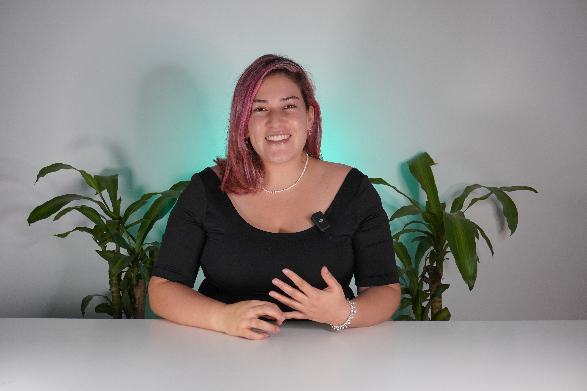

32 min
Apertura
Nos ubicamos, conectamos con el propósito y calentamos motores.
Hoy queremos tener una conversación franca, cercana y sumamente útil. Vamos a revisar el contexto, escuchar la visión estratégica y salir con acuerdos claros que nos den foco real.
Entender los retos y lo que hoy nos exige mayor claridad.
Lograr una visión compartida entre todos los procesos.
Definir prioridades claras y los pasos que siguen mañana.
Queremos que este espacio sea participativo y muy aterrizado. El objetivo es que lo verdaderamente importante se pueda nombrar, ordenar y poner en movimiento.
Conversación abierta, honesta y enfocada.
Prioridades definidas y siguientes pasos.
Iremos de lo general a lo concreto: abrir, escuchar, construir, negociar y cerrar con absoluta claridad.
Nos ubicamos, conectamos con el propósito y calentamos motores.
Escucharemos las prioridades y la dirección estratégica de este año.
Haremos visibles los bloqueos y entenderemos el reto de cada proceso.
Conectaremos áreas, validaremos dependencias y sellaremos acuerdos.
Un respiro necesario para recargar energía antes de la recta final.
Conclusiones por equipo, mensaje final y compromisos pactados.
Para mantener el ritmo, cada persona compartirá la esencia de su preparación previa. Al grano y con foco.
Corta, clara y al punto. Ideal para abrir la conversación con buena energía.
Nombraremos las cosas, pero no resolveremos problemas profundos en esta ronda. Ya habrá tiempo.
Estaremos acompañando la conversación, cuidando el ritmo y ayudando a que todo lo importante quede organizado y sea accionable.
Orientará la charla para que cada punto conecte con el propósito del negocio y la estrategia anual.
LinkedIn
Asegurará que la metodología fluya, el tiempo rinda y las buenas ideas se conviertan en compromisos.
LinkedInEl diagnóstico inicial es claro: hay muchísima disposición, pero necesitamos alinear mejor los esfuerzos entre equipos.
Una buena intención no basta. Cada frente de trabajo debe saber exactamente qué significa "lograr el objetivo".
Hay dependencias invisibles entre áreas. Hoy vamos a ponerlas sobre la mesa para dejar de lado las fricciones operativas.
Este espacio está diseñado para coordinarnos de verdad: quién necesita a quién, para cuándo, y cómo lo vamos a medir.
Nuestra próxima sesión estará 100% enfocada en ejecución. Tomaremos todo lo construido hoy y le pondremos dolientes, fechas y métricas. Nada se queda en el aire.